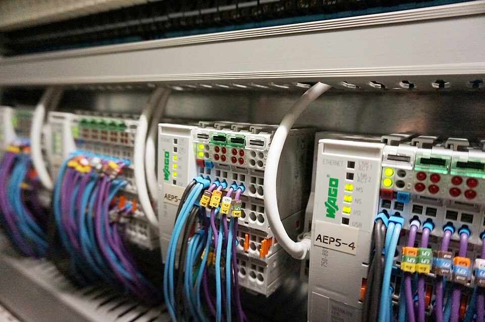

Diagnose a stale or wrongly scaled point across two protocols
Distinguish field wiring, controller identity, BACnet freshness and Modbus register interpretation on an isolated BMS trainer.
Label the network, device and point separately
Use your isolated lab or an instructor-provided read-only dataset. Draw the workstation, controller, router and field trunk. BACnet/IP uses IP networking, while BACnet MS/TP uses an RS-485 bus. Record BACnet device instance and the point’s object type and instance. MS/TP MAC address identifies a station on its local trunk. Verify matching data rate, address uniqueness and the documented terminal polarity, reference, bias and termination on the detached trainer. Separately identify the Modbus server or serial unit, function, register offset, data type, scale and engineering units. An RS-485 connector alone does not identify its protocol.

Photo by Ben Franske, resized. Original photo · CC BY-SA 4.0.


Photo by Pierre75000, resized. Original photo · CC BY-SA 4.0.

See a controls specialist test BACnet/IP and MS/TP on a bench before going on site.
Work a three-case read-only comparison
- Stale reuse. At 09:01 the controller changes from 20.0 to 21.2 °C. A direct BACnet read agrees at 09:02 but the supervisor still shows 20.0 with a timestamp from 08:55. Compare polling, change-of-value support and freshness configuration before moving any wire.
- Wrong scale. The documented training Modbus register 40011 returns raw 212, corresponding to 21.2 °C at 0.1 °C per count. The protocol offset for conventional 40011 numbering is 10. Check whether the configured tool expects the reference notation or the zero-based offset. Record function code 03 for this holding-register example.
- Wrong interpretation. A documented training word
0xFF9Chas signed 16-bit value −100. At 0.1 units per count that gives −10.0. An unsigned interpretation gives 65436 before scale. For larger types, look up vendor word order and type. Two correct devices showing two independent measurements make better test patterns than zeros.
Verify quality and recovery without writing commands
Show one update within the agreed allowance and one deliberate stale condition using the classroom simulator or dataset. Label quality, engineering units and the time source. If a whole trunk disappears, compare router or gateway status and the network diagram first. Use only authorised directed reads on the training system. Add the resulting map and recovery row to the platform case in P112 · Build and commission a Niagara 4 station on a training system, P113 · Trace a Siemens Desigo point from PXC to Desigo CC or P114 · Transfer commissioning skills across four BMS ecosystems.
Related lesson and source material
T56 · Building control sequences, command priorities and point quality.